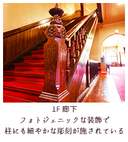
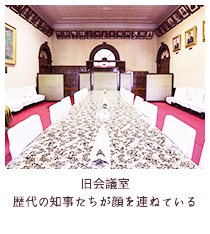
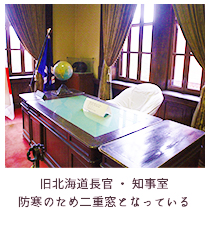
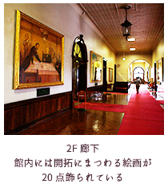
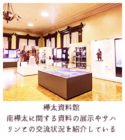
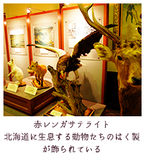
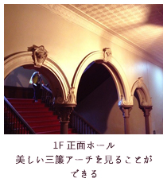
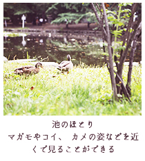

ABOUT 旧北海道庁について
札幌の北3条通から西方面を望むと、突き当たりに堂々とした姿の北海道庁旧本庁舎が見える。赤れんが庁舎」の愛称で知られる煉瓦づくりの建物だ。
現在使われている新庁舎ができるまで約80年に渡って道政を担った旧本庁舎は、
1888年（明治21年）に建てられたアメリカ風ネオ・バロック様式の建築。
明治時代に作られたひずみのあるガラスや、
化粧枠にしまわれた寒さ対策の二重扉など、そこかしこに機能美が感じられる。
館内は一般に無料公開され、北海道の歴史をたどる資料を展示。
時間さえゆるせば、常駐している観光ボランティアスタッフの説明を聞き、
建物の奥深さを感じてほしい。
 赤れんが庁舎ってなぁに？
赤れんが庁舎ってなぁに？
その名の通り、赤いれんがの建物です！
そんなことは、赤れんが庁舎という名前を見れば誰だってわかりますね。
冗談はさておき、そもそも赤れんが庁舎という建物は何故建てられたのか？ という話をします。
かつて北海道は、函館県・札幌県・根室県の３県１局制をとっていました。しかし、どうにもまとまりが悪いし、人口密度もやたら低いしであんまり良いことがない。
そこで北海道はもう『北海道』として一括りにしてしまおう、ということになりました。
その際に、北海道の新しいシンボル、北海道庁として立てられたのが赤れんが庁舎なのです。

 北海道庁が観光名所なの？
北海道庁が観光名所なの？
大丈夫、今の赤れんが庁舎は旧北海道庁です。
屋内にも気軽に入れます。 西洋風の建物なので、赤れんが庁舎が現役だった時代の職員の方々は、なんとなく居心地が悪く働きづらかったことでしょう。
やはり、日常的にいるなら普通の建物が一番ですよね。
しかし！ 観光客、つまり旅行者にとっては、非日常こそが求めているものだろうと思います。
その綺麗な建物は、外観を見ただけでも来た甲斐があったと思うこと間違いありません。そして、入場も無料なので館内にも気軽に入れます。
館内はまさしく外国！ と言った感じなので観光地にはピッタリです。

NEWS お知らせ
- 赤れんが庁舎前庭の桜の開花情報をお知らせしています。（総務部総務課）
- 一般社団法人北海道建設業協会及び一般社団法人札幌建設業協会より赤れんが庁舎前庭のレンガ舗装をご寄贈いただきました。（総務部総務課）
- 赤れんがFree Wi-Fiサービスの提供中です。(総務部総務課・経済部観光局)
GALLARY 写真
- 
- 
- 
- 
- 
- 
- 
- 
ACCESS アクセス
住所：札幌市中央区北3条西6丁目
営業時間：8時45分～18時
定休日：年末年始
料金：無料
駐車場：なし
関連リンク：
http://www.pref.hokkaido.lg.jp/sm/sum/sk/akarenga.htm
http://www.welcome.city.sapporo.jp/find/culture/former_ hokkaido_government_office/
交通アクセス：
・各線「さっぽろ」駅 より徒歩8分
・各線「大通」 駅より徒歩9分